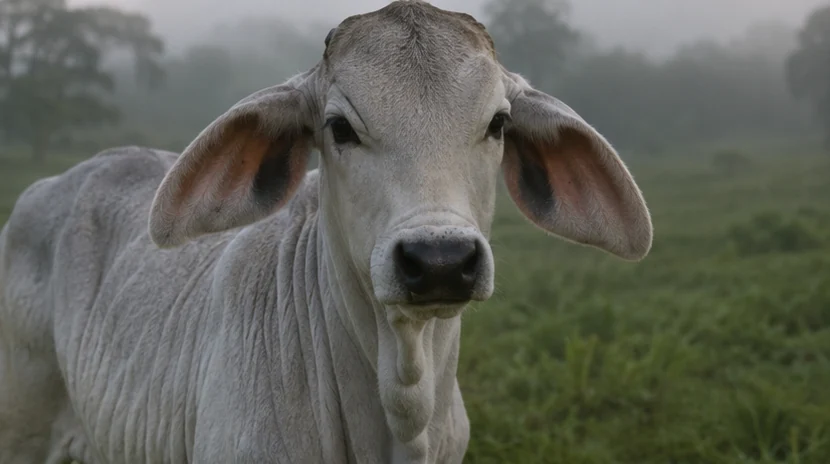
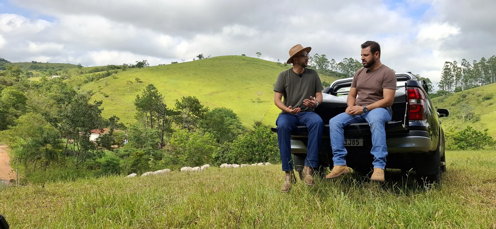
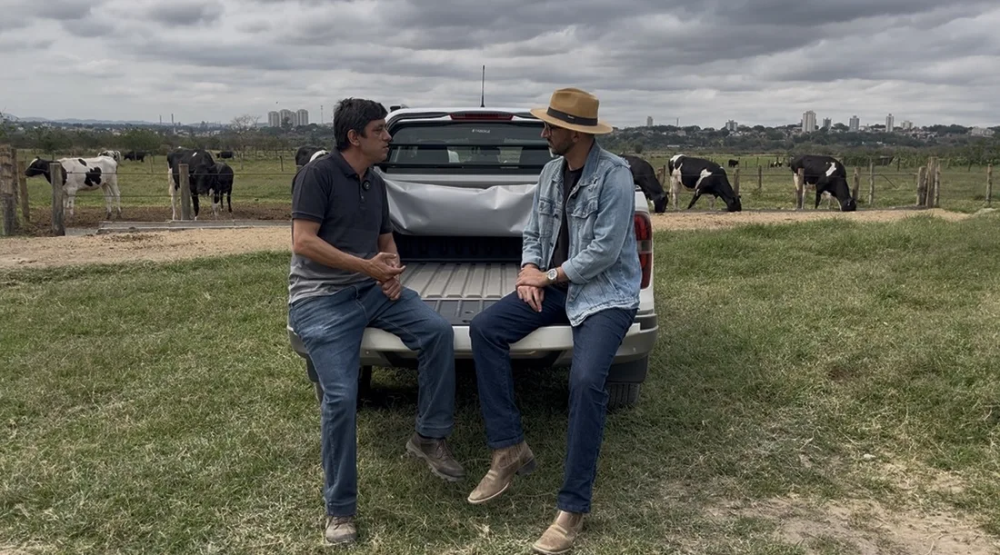
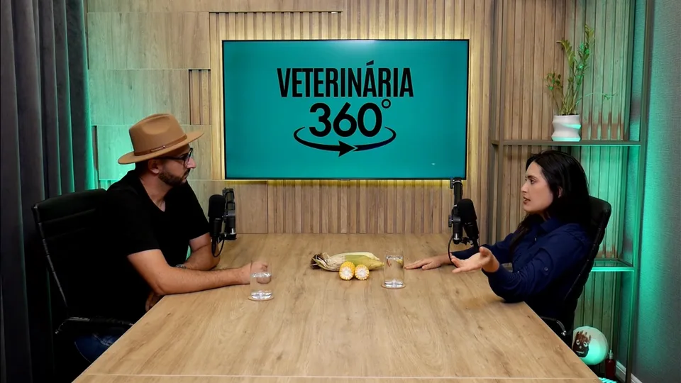
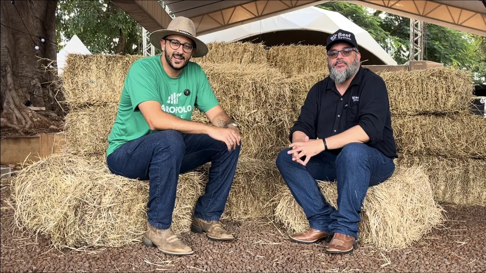
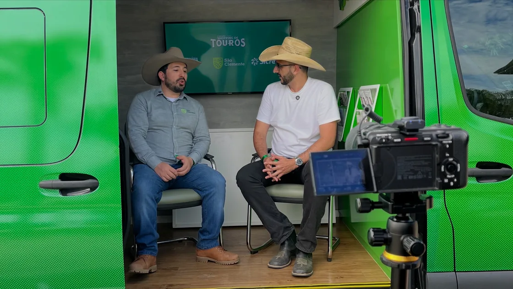
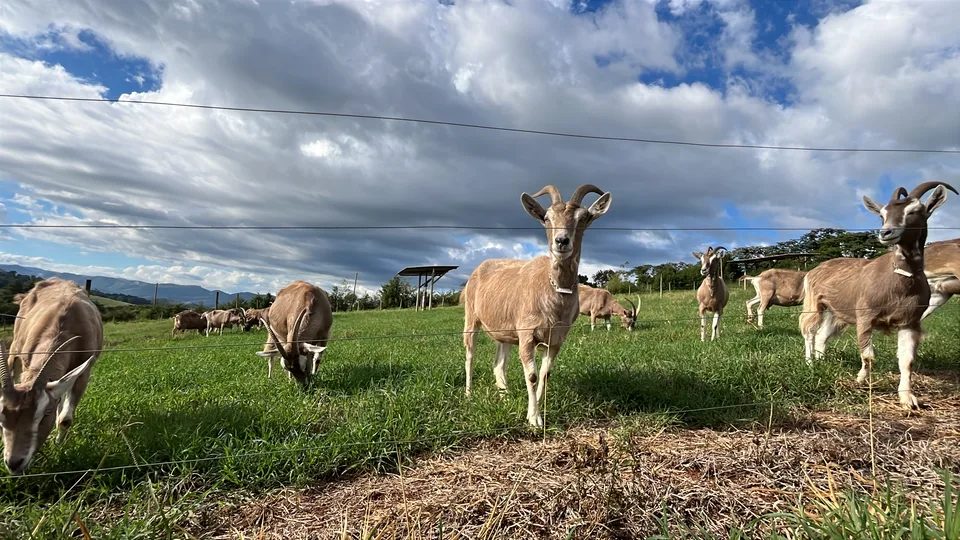
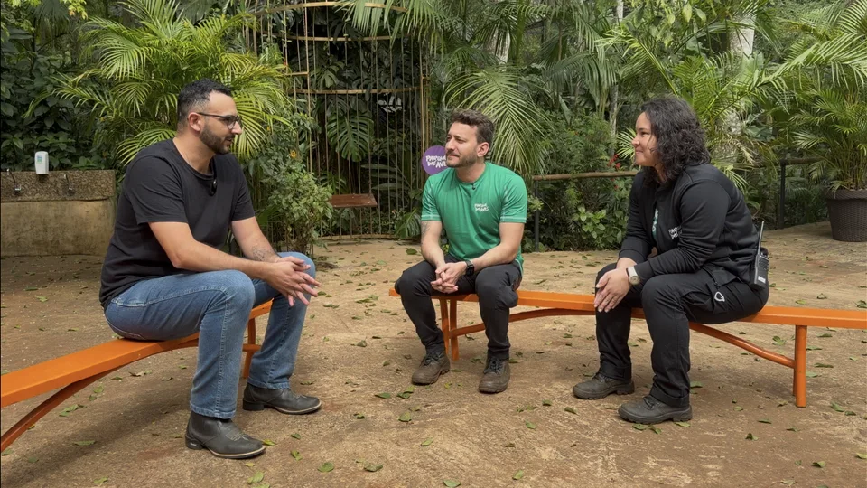
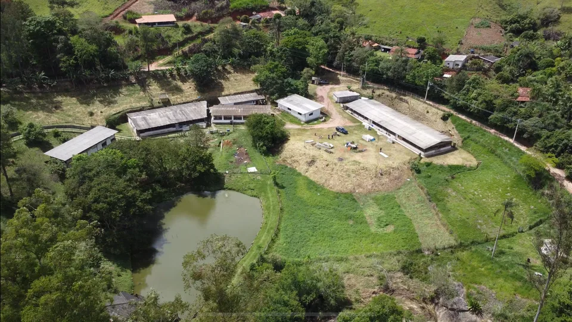

Na Estrada1.350 bezerros por ano
Daniel Marcondes

O Veterinária 360 é um projeto de comunicação dedicado a dar voz às pessoas, compartilhar experiências e aproximar diferentes perspectivas da medicina veterinária, do agronegócio e da saúde pública.
Disponível no YouTube e Spotify, o projeto alcança espectadores e ouvintes no Brasil e em diferentes países, consolidando uma comunidade interessada em informação, conhecimento e boas histórias.
Por meio de entrevistas e conversas com profissionais, pesquisadores, produtores rurais, empreendedores e personalidades, o podcast constrói um espaço de troca de conhecimentos, valorização de histórias e divulgação de iniciativas que contribuem para o desenvolvimento desses setores.
Com uma proposta multidisciplinar, o Veterinária 360 aborda temas que vão muito além da clínica de pequenos animais. Medicina veterinária, produção animal, tecnologia, inovação, sustentabilidade, saúde única, gestão e empreendedorismo fazem parte desse universo.

Na EstradaDaniel Marcondes
 Tecnologia
Tecnologia
Diego Martins
 Gestão
Gestão
Leonardo Miranda

Veterinária 360° Na EstradaA porteira se abre e o estúdio muda de lugar. Rodrigo visita propriedades para ouvir de perto quem trabalha com a terra e os animais.
Conheça a série





O Veterinária 360° e seu apresentador em outras conversas.
Ver todas as participações